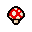

Hasznos tárgyak és hatásaik

| Tárgy | Hatás | Ajánlás |
|---|---|---|
 Brimstone Brimstone |
Fő támadás helyett lézersugár | Kihagyhatatlan erősítésekhez |
| Holy Mantle | Egy ütést blokkol körönként | Túléléshez ideális |
 Guppy Transformation Guppy Transformation |
Repülés és legyek generálása | Kombinálható más tárgyakkal |
|  Magic Mushroom | +1 HP, minden stat növelése és sebzés megduplázása a szobában. | Az egyik legjobb tárgy a játékban! Szinte minden helyzetben hasznos. |
 Sacred Heart Sacred Heart |
+1 HP, lövések automatikus célzása, sebzés +230%-kal növekszik. | Kiemelkedően hasznos boss harcokhoz és hosszabb pályákhoz. Lassabb lövedékekkel kombináld! |
| The Mind | Az összes szoba feltárása a térképen. | Kiváló választás, ha a pályák gyors befejezése a cél. |
Véletlenszerű Tipp
Tippek a játékmenethez
-
Használj bombákat titkos szobák felfedezésére.
-
Fontos a karaktered statisztikáinak figyelemmel követése.
-
Tartsd észben: nem minden erős tárgy hasznos minden szituációban!
Legnehezebb Boss-ok
-
Delirium: Véletlenszerű támadásokkal és formákkal nehezíti meg a harcot.
-
Hush: Két szakaszból álló, hosszú boss harc, amely támadási sebességet követel.
-
The Lamb: Erős támadások és gyors mozgás jellemzik.